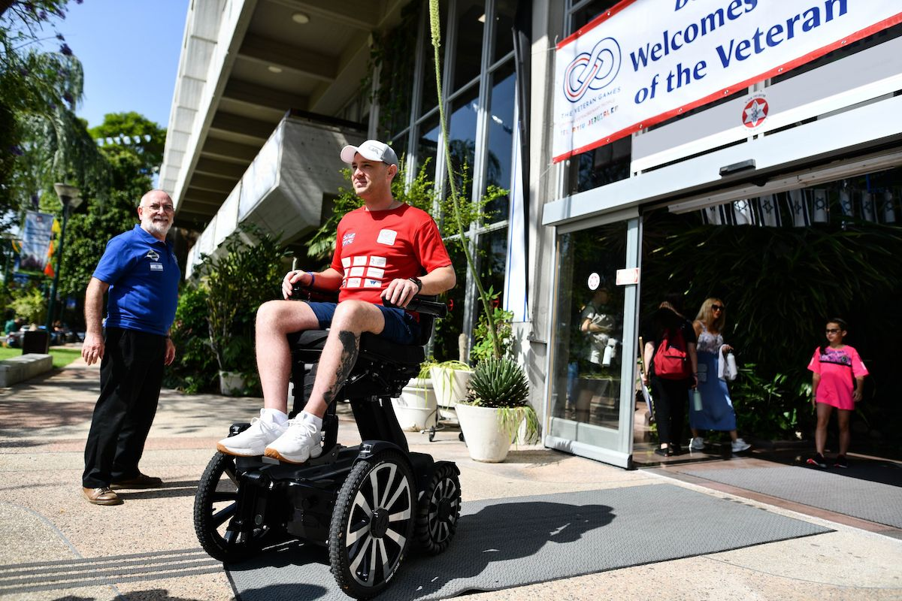
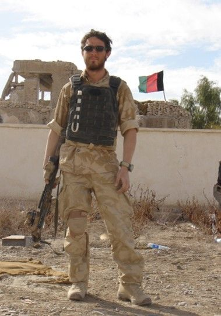

Our Wellbeing Programme
Veterans sharing their stories of rehabilitation with schools, community clubs and businesses.
Since its inception in 2019, the Veteran Games and Conference has grown into an organisation that operates year-round. The charity is not just about one big trip a year: the focus lies in creating meaningful connections and empowering veterans throughout their recovery journey.
Introduced in June 2022, the Wellbeing Programme brings veterans and audiences together to share their stories of rehabilitation. These candid conversations about their challenges and the importance of resilience had reached over 7,600 teenagers from schools across the country by January 2024, along with numerous community clubs and businesses. The ability of these veterans to connect with audiences on a personal level has proven transformative and inspiring for people of all ages.
Sessions typically last around an hour: an introduction to the charity, then a UK veteran sharing their story, with images and video, built around the messages of resilience, mental health and asking for help.
The programme has been fully funded. Schools may make a contribution if they can afford to, which helps the charity extend the programme into inner-city and disadvantaged areas. Corporates and organisations may sponsor a session for £250.


Phil Eaglesham
Phil attended the Veteran Games with his family in 2023. He is a former Royal Marine Commando, a Paralympic sport shooter, businessperson and mental health campaigner. Phil served as a Corporal with the Royal Marines. Following his third tour of duty, Afghanistan in 2010, he was diagnosed with Q fever, which left him with chronic disabilities.
Phil was introduced to Para Shooting in 2012 and competed at the Paralympic Games in Rio 2016. In 2018 he competed in the World Shooting Para Sport Championships in South Korea and won a silver medal at the US Nationals in Georgia. In 2019 he won bronze at the World Championships in Australia, Ireland’s first ever World Championship medal in Para Shooting, qualifying him for the 2020 Tokyo Paralympics.
Married with three children, Phil is founder and project manager of Victor Mobility, specialising in elevated wheelchair design. He won the Institute of Engineering Designers Alex Moulton Award 2018 for product innovation, and is a keen advocate for mental health awareness.
Alongside Phil, the charity has worked with seven other veterans, training them to deliver their stories to a broader audience.
What schools said
“Phil Eaglesham’s talk was a powerful and inspiring experience. His first hand accounts of military service resonated deeply, offering a profound insight into dedication and sacrifice. Phil’s ability to blend honesty with hope left an indelible mark, reminding me of the importance of resilience and the true meaning of service.”
“Such a wonderful experience and so moving. Thanks for organising. We must have him back.”
“We were thrilled to welcome Phil to Epsom College to speak. He was incredibly inspirational to the students. They loved learning about his new wheelchair design. A lot of students came up afterwards to speak personally to him about his condition. Truly inspirational.”
“Jamie’s visit to our school was a deeply moving experience that left an enduring impact on all of us. His accounts of resilience, sacrifice, and service were not just stories; they were windows into a world of dedication and bravery.”